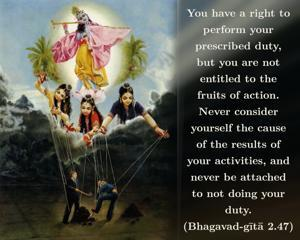
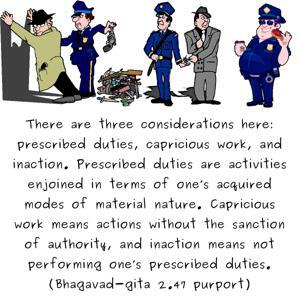
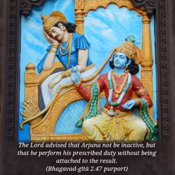
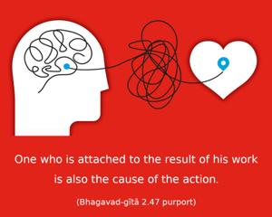

You have a right to perform your prescribed duty, but you are not entitled to the fruits of action. Never consider yourself the cause of the results of your activities, and never be attached to not doing your duty.




There are three considerations here: prescribed duties, capricious work, and inaction. Prescribed duties are activities enjoined in terms of one’s acquired modes of material nature. Capricious work means actions without the sanction of authority, and inaction means not performing one’s prescribed duties. The Lord advised that Arjuna not be inactive, but that he perform his prescribed duty without being attached to the result. One who is attached to the result of his work is also the cause of the action. Thus he is the enjoyer or sufferer of the result of such actions.
As far as prescribed duties are concerned, they can be fitted into three subdivisions, namely routine work, emergency work and desired activities. Routine work performed as an obligation in terms of the scriptural injunctions, without desire for results, is action in the mode of goodness. Work with results becomes the cause of bondage; therefore such work is not auspicious. Everyone has his proprietary right in regard to prescribed duties, but should act without attachment to the result; such disinterested obligatory duties doubtlessly lead one to the path of liberation.
Arjuna was therefore advised by the Lord to fight as a matter of duty without attachment to the result. His nonparticipation in the battle is another side of attachment. Such attachment never leads one to the path of salvation. Any attachment, positive or negative, is cause for bondage. Inaction is sinful. Therefore, fighting as a matter of duty was the only auspicious path of salvation for Arjuna.